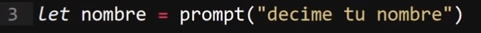
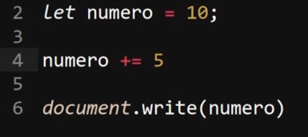
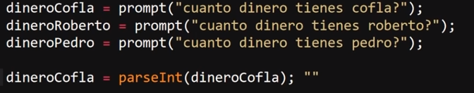
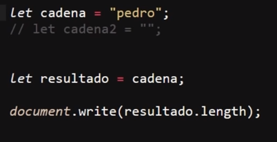

Funciones Nativas de JavaScrip
Se trata de todas aquellas funciones pre-establecidas que forman parte de la funcionalidad de javaScript, por lo tanto son todas aquellas funcionalidades que constituyen la funcionalidad del lenguaje en sí.
Prompt()
-
Esta Función tiene como objetivo el retornar un valor ingresado por el usuario, esto lo hace mediante una alerta la cual incluye un cuadro de texto donde el usuario podra ingresar el dato en cuestión.
Ejemplo de Codigo

Resultado
Por lo tanto esta función retorna un dato que puede ser almacenado dentro de una variable de la siguiente forma:

Nota: el "promp" unicamente retorna datos de tipo cadena, por lo tanto para trabajar con otros tipos de datos en necesario conbertirlos a estos, por ejemplo con el uso de la propiedad "parseInt" la cual combierte los datos a enteros.
documet.write
-
Este elemento Indica que los datos que se ingresen dento de este deben ser impresos como una parte del documeto de la sigute forma:
Codigo

Resultado
Por lo tanto este elemento plasma como parte del documento HTML cualquier cosa que se le indique.
-
parseInt()
-
Esta función convierte (parsea) un argumento de tipo cadena y devuelve un entero de la base especificada, en otras palabras esta expresión convierte los numeros expresadas en cadenas de texto en datos de tipo entero.

En este ejemplo se le pide al usuario que ingrese un numero entero, pese a esto el tipo de dato retornado por prompt es una cadena de texto, por ende el numero esta amacenado en este tipo de dato, por esto se utiliza la función "parseInt" para modificar el tipo de dato a texto y poder operarlo de este modo.
Lenght
Esta propiedad retorna el numero de caracteres que posee un dato, ya sea una cadena de texto un array etc

Resultado